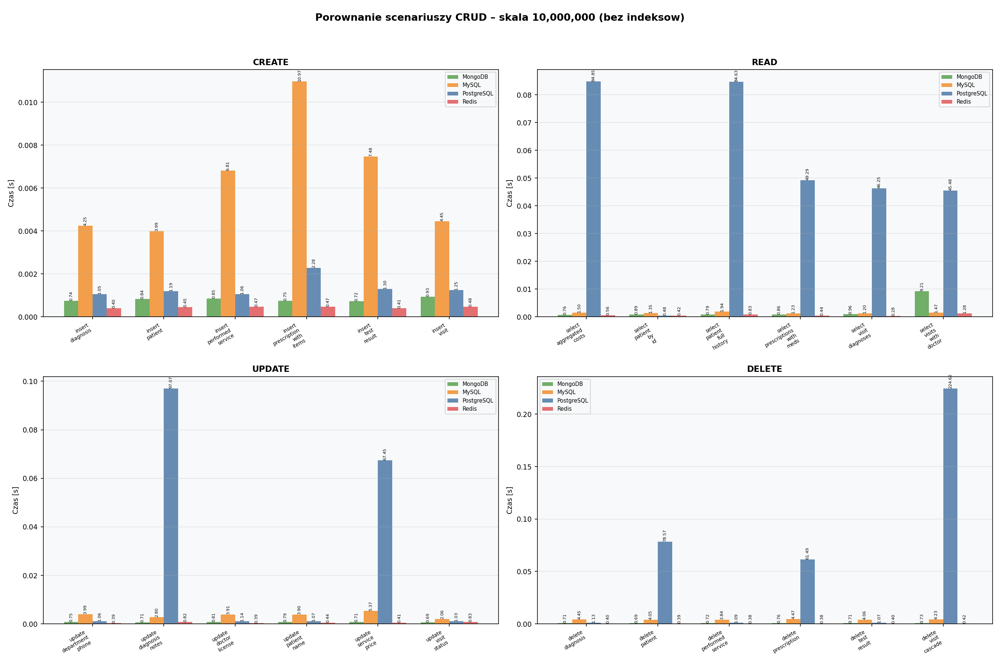
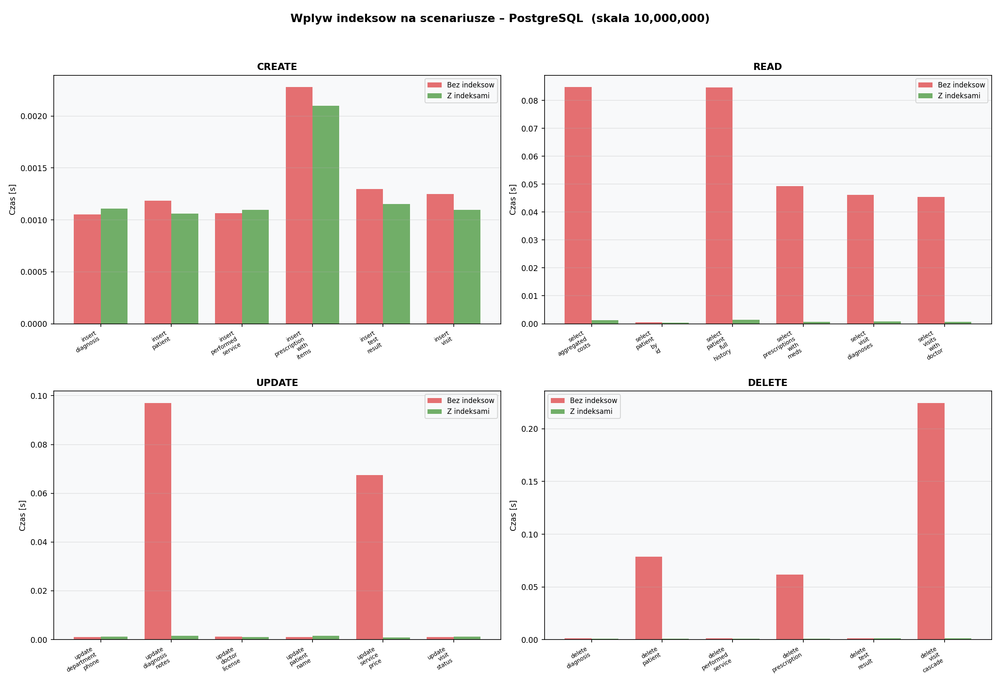
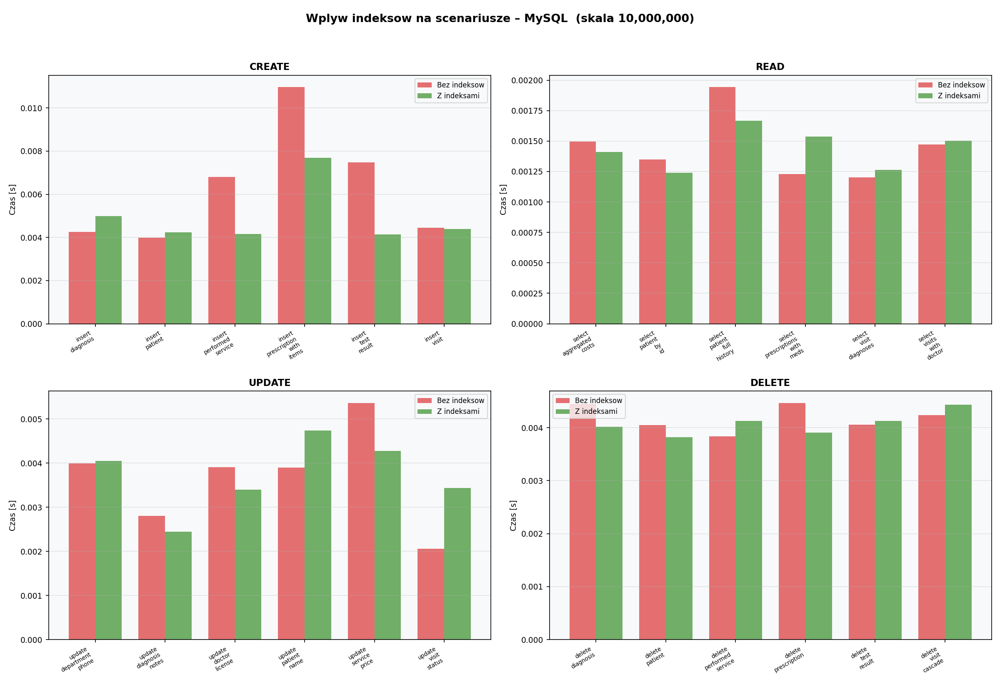
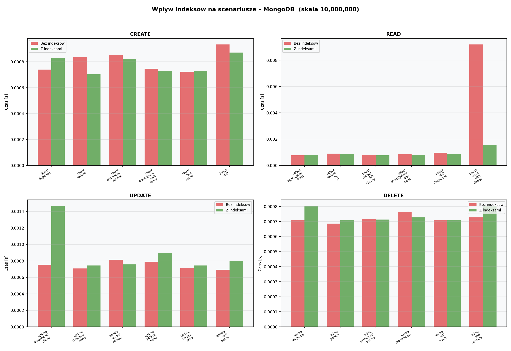
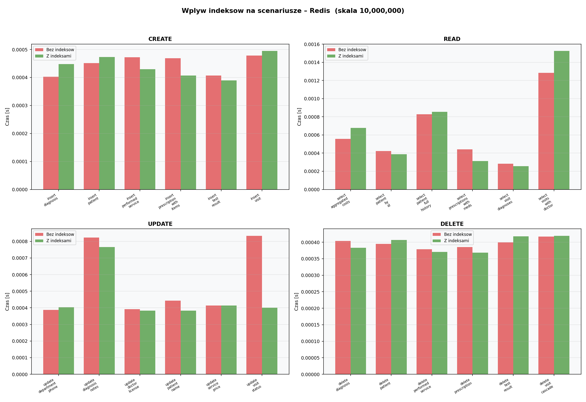
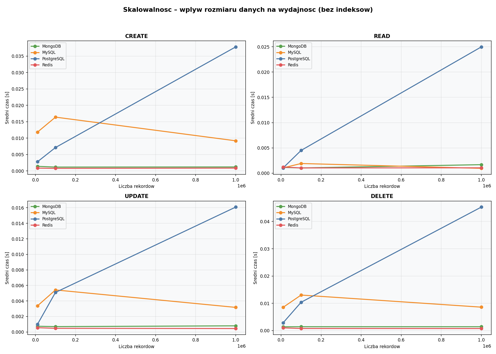
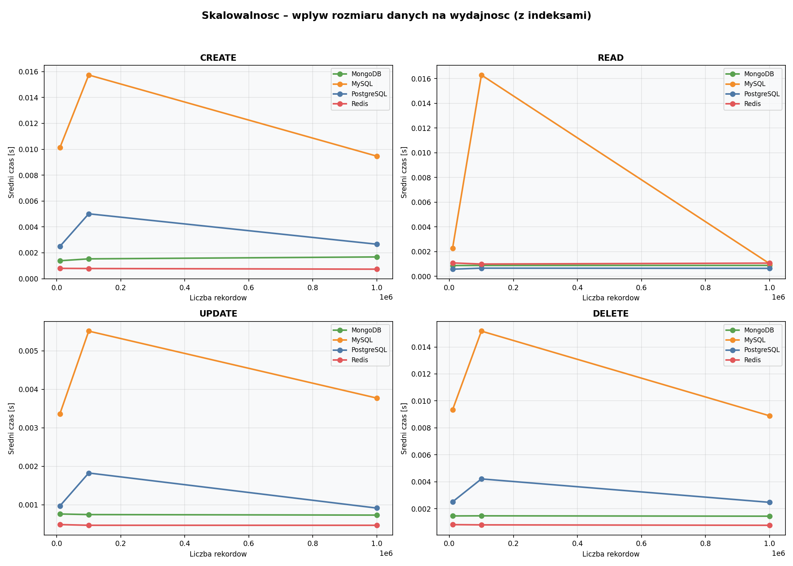

Roboczy dokument do kopiowania do PowerPointa. Każda sekcja = jeden slajd. Treść = punkty na slajd. Notatki = tekst do czytania na głos. Wykres = obrazek do wstawienia.
Analiza wydajności nierelacyjnych i relacyjnych baz danych
PostgreSQL 16 · MySQL 8.0 · MongoDB 7 · Redis 7
Projekt ZTDB · 24 scenariusze CRUD · skala do 10 000 000 sumarycznych rekordów (2 mln wizyt) · n=3 powtórzeń
Dzień dobry. Przedstawię wyniki empirycznego porównania czterech popularnych baz danych — dwóch relacyjnych (PostgreSQL i MySQL) i dwóch nierelacyjnych (dokumentowa MongoDB oraz klucz-wartość Redis) — w zastosowaniu typowym dla systemu informacji medycznej. Sercem prezentacji są wyniki pomiarów: jak długo trwają operacje CRUD przy różnych skalach danych, jak na to wpływają indeksy i co z tego wynika praktycznie. Cała implementacja benchmarku to drugorzędne tło — najważniejsze są liczby, wykresy i wnioski, które pokazują, w jakich warunkach która baza ma realną przewagę.
Cel: Zmierzyć i porównać wydajność CRUD czterech baz na tych samych danych, dla trzech skal (500k, 1M, 10M sumarycznych rekordów; odpowiednio 100k/200k/2M wizyt), z indeksami i bez — i odpowiedzieć, kiedy która baza ma sens.
Hipoteza H1: Indeksy znacząco przyspieszają READ przy akceptowalnym spowolnieniu WRITE.
Formalnie:
Cel projektu jest pragmatyczny: nie wybrać "najlepszej" bazy, tylko pokazać, w jakich warunkach każda z nich przoduje. Hipoteza H1 jest celowo sformułowana tak, by była falsyfikowalna: jeśli zobaczymy bazę, gdzie indeksy nie przyspieszają READ lub spowalniają WRITE więcej niż 1.5×, H1 dla tej bazy nie zostaje potwierdzona. Próg 1.5× wybrałem jako kompromis literaturowy — typowy "akceptowalny" narzut indeksów to 10–30%. Współczynniki S_read i K_write obliczam jawnie dla każdego scenariusza w skrypcie scripts/analyze_hypothesis.py i prezentuję w tabelach na slajdach 18 i 19.
| Nr | Nazwa scenariusza | SQL (PG / MySQL) | MongoDB | Redis |
|---|---|---|---|---|
| C1 | insert_patient | INSERT INTO patients | insert_one() | pipeline HSET + SADD |
| C2 | insert_visit | INSERT INTO visits (FK) | $push wizyta | pipeline HSET + SADD |
| C3 | insert_diagnosis | INSERT INTO diagnoses | $push diagnoza | RPUSH na liście |
| C4 | insert_prescription_with_items | INSERT recepta + N pozycji | $push recepta + items[] | pipeline HSET (N+1 kluczy) |
| C5 | insert_performed_service | INSERT performed_services | $push usługa | HSET + HINCRBYFLOAT (suma) |
| C6 | insert_test_result | INSERT test_results | $push wynik | HSET mapping |
| Nr | Nazwa scenariusza | SQL (PG / MySQL) | MongoDB | Redis |
|---|---|---|---|---|
| R1 | select_patient_by_id | SELECT po PK | find_one po _id | HGETALL patient:{id} |
| R2 | select_visits_with_doctor | JOIN visits + doctors | find + projection | SMEMBERS + pipeline GET/HGETALL |
| R3 | select_visit_diagnoses | JOIN diagnoses + diseases | aggregate $unwind | LRANGE + pipeline EXISTS |
| R4 | select_patient_full_history | Multi-JOIN (3 tabele) | find_one + projection | 2-fazowy pipeline (HGETALL+SMEMBERS → GET+LRANGE) |
| R5 | select_aggregated_costs | SUM + GROUP BY | aggregate pipeline | SMEMBERS + batch HGETALL + SUM |
| R6 | select_prescriptions_with_meds | Triple JOIN | find_one + projection | SMEMBERS + pipeline GET + HGETALL |
| Nr | Nazwa scenariusza | Cel | Kategoria |
|---|---|---|---|
| U1 | update_patient_name | Zmiana nazwiska pacjenta po id | encja główna |
| U2 | update_visit_status | Zmiana statusu wizyty po id | transakcyjna |
| U3 | update_service_price | Zmiana ceny usługi po visit_id (wielowierszowy w SQL) | wsadowa |
| U4 | update_diagnosis_notes | Aktualizacja notatki diagnozy po visit_id | transakcyjna |
| U5 | update_doctor_license | Zmiana numeru licencji lekarza | słownikowa |
| U6 | update_department_phone | Zmiana telefonu oddziału | słownikowa |
| Nr | Nazwa scenariusza | Cel | Kaskada |
|---|---|---|---|
| D1 | delete_test_result | Usunięcie pojedynczego wyniku badania | — |
| D2 | delete_diagnosis | Usunięcie pojedynczej diagnozy | — |
| D3 | delete_patient | Usunięcie pacjenta | kaskada przez visits→* |
| D4 | delete_performed_service | Usunięcie wpisu wykonanej usługi | — |
| D5 | delete_prescription | Usunięcie recepty | kaskada → prescription_items |
| D6 | delete_visit_cascade | Usunięcie wizyty z wszystkimi dziećmi | 4× ON DELETE CASCADE |
Domena to klasyczny system przychodni: pacjenci, wizyty, diagnozy ICD-10, recepty z lekami, wyniki badań. Schemat ma integralność referencyjną w wariancie SQL (klucze obce z ON DELETE CASCADE) — to ważne, bo wpływa na koszt DELETE. MongoDB modeluje to dokumentem z embedded diagnozami, usługami i receptami, więc kaskada jest "darmowa". Redis nie ma w ogóle relacji — wszystko trzymane jako hash po kluczu patient:{id}. Pięć skal razy cztery bazy razy 24 scenariusze razy dwa warianty (z indeksami i bez) razy n=3 daje rząd kilku tysięcy pomiarów. Scenariusze są dobierane tak, by reprezentować realne wzorce: prosty lookup po PK, JOIN z lekarzem, kaskadowe usunięcie wizyty i tak dalej.
{
"_id": 12345, "national_id": "90010112345",
"first_name": "Anna", "last_name": "Kowalska", "gender": "F",
"visits": [{
"visit_id": 9876, "doctor_id": 42, "visit_date": "2024-05-12", "status": "completed",
"performed_services": [{"service_id": 7, "quantity": 1, "final_price": 120.00}],
"diagnoses": [{"disease_id": 314, "diagnosis_type": "main", "notes": "..."}],
"prescriptions": [{"prescription_code": "RX-...", "items": [{"medication_id": 88, "dosage": "..."}]}],
"test_results": [{"parameter_name": "HGB", "result_value": 13.4, "unit": "g/dL"}]
}]
}
Słowniki (doctors, diseases, medical_services, medications, departments, specializations) jako osobne, płaskie kolekcje; referencje po ID, bez wymuszania.
patient:{id} HASH { national_id, first_name, last_name, birth_date, gender }
visit:{id} HASH { patient_id, doctor_id, visit_date, status }
session:doctor:{id} HASH { first_name, last_name, dept_id, spec_id }
prescription:{id} HASH { visit_id, prescription_code, issue_date }
service:total:{vid} HASH { total_price, item_count }
patient:visits:{pid} SET { visit_id, visit_id, ... } ← zastępuje JOIN visits.patient_id
visit:prescriptions:{vid} SET { prescription_id, ... } ← zastępuje JOIN prescriptions.visit_id
visit:diagnoses:{vid} SET { diagnosis_id, ... }
visit:services:{vid} SET { performed_service_id, ... }
Ten slajd pokazuje, jak ta sama dziedzina jest zapisywana w trzech różnych paradygmatach. W modelu relacyjnym mamy 13 znormalizowanych tabel — pomarańczowe to encje główne (patients, doctors), niebieskie to transakcje (visits i jej dzieci), zielone to słowniki. Czerwone strzałki pokazują ON DELETE CASCADE — usunięcie wizyty automatycznie kaskaduje na performed_services, diagnoses, prescriptions, test_results, a dalej na prescription_items. W MongoDB cała ta hierarchia mieści się w jednym dokumencie pacjenta — wizyty są zagnieżdżone jako tablica, a w każdej wizycie tablice usług, diagnoz, recept z pozycjami. Kaskada jest "darmowa" — usunięcie wizyty to operator $pull na tablicy. Limit: 16 MB BSON, dlatego cap 200 wizyt na pacjenta. W Redis nie ma żadnego schematu — wszystkie relacje, które w SQL załatwia FK i JOIN, muszą być utrzymywane ręcznie jako osobne SET-y typu patient:visits:{pid}. To daje O(1) dostęp po znanym kluczu, ale wymaga aplikacyjnej dyscypliny — usunięcie wizyty wymaga ręcznego SREM z indeksów, bo nikt tego za nas nie zrobi. To wyjaśnia, dlaczego później widzimy w benchmarkach takie drastyczne różnice w kosztach JOIN-ów i kaskadowych DELETE między PG/MySQL a MongoDB/Redis.
Trzy uwagi metodologiczne. Po pierwsze, n=3 to świadomy kompromis — uczciwe testy statystyczne typu t-Studenta czy ANOVA wymagałyby n większego lub równego 30. Różnice poniżej pięciu procent między bazami traktuję jako szum. Po drugie, konfiguracje bazy są tunowane realistycznie — to nie są domyślne ustawienia, tylko rozsądny tuning dla maszyny z 16 GB RAM. Dzięki temu MySQL ma 4 GB Buffer Pool, co istotnie wpływa na wyniki. Po trzecie — kluczowe — każdy scenariusz korzysta z mechanizmu _run_split: mierzony jest tylko czas operacji docelowej. Dla CREATE oznacza to czysty INSERT bez doliczania kosztu sprzątającego DELETE; ten ostatni biegnie w teardownie i nie wchodzi do średniej. Dzięki temu nie ma już sztucznego „paradoksu PG INSERT” z poprzedniej wersji benchmarku — wyniki INSERT są odizolowane i porównywalne wprost między bazami.
| Scenariusz | Indeks | PG | MySQL | MongoDB | Redis |
|---|---|---|---|---|---|
| insert_patient | no_idx | 1.37 ms | 4.42 ms | 0.69 ms | 0.47 ms |
| insert_patient | idx | 1.05 ms | 3.14 ms | 0.73 ms | — |
| insert_visit | no_idx | 1.20 ms | 2.75 ms | 0.82 ms | 0.46 ms |
| insert_visit | idx | 1.62 ms (K_write=1.34×) | 3.44 ms (1.25×) | 0.90 ms | — |
| insert_prescription_with_items | no_idx | 2.42 ms | 8.01 ms | — | — |
| insert_diagnosis (liść) | no_idx | 1.03 ms | — | — | — |
Najważniejsza zmiana względem poprzedniej wersji benchmarku: nie ma już spektakularnego „paradoksu PG INSERT”. W starym każdy CREATE był round-tripem INSERT+DELETE i bez indeksów na FK koszt DELETE wystrzeliwał do ponad 100 ms. Po refaktorze _run_split mierzymy WYŁĄCZNIE czas operacji docelowej — sam INSERT — a czyszczący DELETE wykonuje się poza pomiarem w fazie teardown. W efekcie insert_visit przy 10M sumarycznych rekordów wynosi w PG 1.20 ms bez indeksów i 1.62 ms z indeksami. To klasyczne spowolnienie indeksami: K_write = 1.34×, dokładnie w przedziale przewidywanym przez H1. MySQL pokazuje to samo: 2.75 → 3.44 ms, K_write = 1.25×. Mongo i Redis pozostają w okolicy 0.7–0.9 ms — ich silniki zapisu nie mają narzutu porównywalnego z B-tree relacyjnych baz przy wstawianiu pojedynczego rekordu po PK.
Wykres CRUD dla 10 M sumarycznych rekordów (2 M wizyt), wszystkie 24 scenariusze, wariant bez indeksów. Skala logarytmiczna.
Plik: results/charts/crud_comparison_10000000_bez_indeksow.png

Ten wykres pokazuje w jednym rzucie wszystkie 24 scenariusze CRUD przy 10 M sumarycznych rekordów (2 M wizyt), bez indeksów. Cztery rzeczy do zauważenia. Po pierwsze, Redis i MongoDB tworzą „dolne pasmo” 0.4–1 ms — kluczowo-wartościowy i dokumentowy paradygmat nie cierpią na koszt JOIN. Po drugie, górne słupki to scenariusze PG związane z kluczami obcymi: delete_visit_cascade 220 ms, select_patient_full_history 84 ms, update_service_price 67 ms — wszystkie wymagające Seq Scan po tabelach-dzieciach lub po FK. Po trzecie, MySQL siedzi w środku — wolniejszy od Mongo, ale dużo szybszy od PG bez indeksów dzięki buforowaniu InnoDB. Po czwarte, operacje liście jak insert_diagnosis, update_doctor_license, delete_test_result są wszędzie podobne — to baseline czasu dla operacji bez kaskady. Ten obraz uzasadnia tezę: bez indeksów PostgreSQL nie nadaje się do produkcji przy 2 M wizyt. Indeksy nie są opcjonalne.
| Scenariusz | Baza | 500k | 1M | 10M | Trend |
|---|---|---|---|---|---|
| select_aggregated_costs | PG | 9.14 ms | 15.33 ms | 82.22 ms | O(n), 9× |
| select_visits_with_doctor | PG | 4.38 ms | 7.16 ms | 44.17 ms | O(n), 10× |
| select_patient_full_history | PG | 9.19 ms | 18.12 ms | 83.69 ms | O(n), 9× |
| select_visits_with_doctor | MySQL | 1.36 ms | 1.53 ms | 1.39 ms | stabilny (BP) |
| select_patient_full_history | MongoDB | 0.83 ms | 0.73 ms | 0.80 ms | ≈ O(1) |
| select_patient_by_id | Redis | 0.43 ms | 0.43 ms | 0.41 ms | O(1) |
Najważniejsza linia tabeli: PostgreSQL bez indeksów dla select_patient_full_history rośnie z 9.19 ms @500k do 83.69 ms @10M — to około 9-krotny wzrost przy 20-krotnym wzroście sumarycznych rekordów. Idealny przykład O(n) z dominacją JOIN po nieindeksowanej kolumnie. To samo zapytanie z indeksami, które zobaczymy za chwilę, działa w okolicach 1–4 ms niemal niezależnie od skali. MySQL przez długi czas wygląda lepiej, ale to iluzja — InnoDB Buffer Pool ma 4 GB i trzyma w pamięci aktywny zbiór roboczy. To ważny wniosek: szybki bez indeksów nie znaczy nie potrzebuje indeksów — to znaczy ma ukryte buforowanie, które tej skali jeszcze nie wyczerpało. Redis pozostaje płaski jak linijka — O(1) na HGET.
| Scenariusz | Baza | 500k | 1M | 10M | S_read max |
|---|---|---|---|---|---|
| select_visit_diagnoses | PG | 0.45 ms | 0.52 ms | 0.53 ms | 88.47× |
| select_prescriptions_with_meds | PG | 1.86 ms | 0.54 ms | 0.56 ms | 86.50× |
| select_visits_with_doctor | PG | 0.50 ms | 0.55 ms | 0.93 ms | 47.34× |
| select_aggregated_costs | PG | 14.92 ms | 0.65 ms | 2.80 ms | 29.32× |
| select_patient_full_history | PG | 5.58 ms | 0.82 ms | 3.95 ms | 22.09× |
| select_visits_with_doctor | MongoDB | 1.36 ms | 1.41 ms | 1.39 ms | 6.18× @10M |
| select_visits_with_doctor | MySQL | 1.43 ms | 1.40 ms | 1.38 ms | ~1.0× (BP) |
To jest dowód H1 dla PostgreSQL. Porównajcie z poprzednim slajdem: select_visit_diagnoses przy 10 M bez indeksów to 46.77 ms, z indeksami 0.53 ms — 88.47 razy szybciej. To najmocniejszy wynik całego benchmarku. Drugi w kolejności select_prescriptions_with_meds osiąga 86.5×. Trend O(log n) widać natychmiast: PG z indeksami przy 10 M dla większości scenariuszów wciąż w okolicach 0.5–4 ms. To dokładnie krzywa logarytmiczna. MySQL pokazuje minimalny efekt — wynika to z faktu, że Buffer Pool i tak buforuje całość, indeksy nie mają z czego ratować. MongoDB ma realny zysk 6.18× @10M dla select_visits_with_doctor, gdzie indeks na doctor_id pozwala uniknąć collection scan po 2 milionach wizyt.
Czas każdego scenariusza w wariancie no_idx vs idx. Im większa różnica, tym większy zysk z indeksu.
Plik: results/charts/index_impact_PostgreSQL_10000000.png

PostgreSQL — gwiazda indeksów. Na tym wykresie czerwone słupki, bez indeksów, dla SELECT i delete_visit_cascade są dramatycznie wyższe od zielonych z indeksami. Najważniejsze scenariusze: select_visit_diagnoses spada z 46.77 ms do 0.53 ms (88×), select_prescriptions_with_meds z 48 do 0.56 ms (86×), delete_visit_cascade z 220 do 1.05 ms (~210×), update_service_price z 67 do 1.05 ms (~64×). To jest właśnie obraz, dla którego warto utrzymywać indeksy na wszystkich kluczach obcych: zyskujesz rząd wielkości na READ, UPDATE z WHERE po FK i DELETE rodzica, płacisz jedynie 25–85% narzutu na zapis po PK.
MySQL: efekt indeksów znacznie mniej dramatyczny — InnoDB Buffer Pool maskuje korzyść na READ.
Plik: results/charts/index_impact_MySQL_10000000.png

Porównajcie ten wykres z poprzednim PG. Tu różnice między czerwonym a zielonym są wyraźnie mniejsze. Najwyraźniejszy zysk z indeksu: delete_visit_cascade z 2.61 do 2.85 ms — minimalny, bo InnoDB i tak indeksuje FK domyślnie. Większość SELECT-ów ma czerwone i zielone słupki niemal równej wysokości — co potwierdza tezę: InnoDB Buffer Pool 4 GB buforuje aktywny zbiór, więc Sequential Scan jest w RAM-ie i prawie tak szybki jak Index Scan. Dla MySQL realna nauka: indeksy są kluczowe dla DELETE z kaskadą (ale tu InnoDB robi to za nas), na READ przy datasetach mieszczących się w Buffer Pool zysk jest umiarkowany.
MongoDB: indeksy pomagają głównie zapytaniom po polach niezagnieżdżonych (np. doctor_id); kaskada zarządzana w aplikacji.
Plik: results/charts/index_impact_MongoDB_10000000.png

MongoDB to pośrednia kategoria efektu indeksów. Trzy istotne obserwacje. Po pierwsze, SELECT-y po _id są niezmienne — IDHACK natywnie omija planner — więc tu nie ma czerwonych słupków wartych uwagi. Po drugie, złożone zapytania aggregate, jak select_visits_with_doctor, zyskują 6.18× przy 10 M z indeksami na doctor_id. Po trzecie, DELETE w MongoDB pokazuje minimalną różnicę — kaskada nie istnieje, bo dzieci są embedded, operacja deleteOne usuwa cały dokument za jednym razem. Ograniczenie: kolekcja patients została zamknięta na 800k dokumentów (MAX_VISITS_PER_PATIENT=200) z powodu limitu 16 MB BSON na dokument.
Redis: czerwone i zielone słupki identyczne — Redis nie ma indeksów, więc wariant "z indeksami" to ten sam test.
Plik: results/charts/index_impact_Redis_10000000.png

Ten wykres celowo wygląda jak placeholder: niemal identyczne słupki. To nie błąd — to wynik. Redis fundamentalnie nie ma indeksów, poza Sorted Setami i RediSearch w wersji enterprise, których nie używamy. Każda operacja CRUD to dostęp po jawnym kluczu — HGET patient:42 name. Wahania plus minus 9 procent to czysty szum systemowy. Wniosek: Redis nie jest w grze "indeksy vs brak" — jest w innej lidze. Operuje wyłącznie w RAM, ma O(1) na HGET/HSET, i to czyni go niedoścignionym na każdym scenariuszu, gdzie znamy klucz. Kosztem są wszystkie funkcje, których brak: JOIN-y, agregacje, transakcje ACID. To uzasadnia rolę Redis w realnym systemie — warstwa cache, nie zamiennik bazy podstawowej.
| Scenariusz | PG no_idx | PG idx | MySQL idx | MongoDB | Redis | Obserwacja |
|---|---|---|---|---|---|---|
| update_visit_status | 1.05 ms | 1.92 ms | 2.29 ms (1.39×) | 0.70 ms | 0.38 ms | K_write=1.83× — klasyczne spowolnienie |
| update_service_price | 67.31 ms | 1.05 ms | — | — | — | K_write=0.02× — Index Scan w WHERE |
| update_diagnosis_notes | 68.44 ms | 1.13 ms | — | — | — | K_write=0.02× — indeks na FK |
| update_patient_name | 1.03 ms | ~1.0 ms | ~1 ms | ~0.7 ms | ~0.4 ms | Lookup po PK — neutralny |
UPDATE w PG przy 10 M pokazuje dwa zupełnie różne reżimy K_write. Pierwszy klasyczny: update_visit_status (lookup po PK) ma K_write = 1.83× — indeksy spowalniają zapis, bo trzeba zaktualizować wpisy w drzewie. To minimalne przekroczenie progu 1.5× z H1, w pełni zgodne z oczekiwaniami. Drugi reżim, dużo bardziej dramatyczny: update_service_price ma K_write = 0.02×, bo bez indeksów PG wykonuje Seq Scan po 10 M rekordów w klauzuli WHERE (67 ms), a z indeksem na FK od razu lokalizuje rekord (1 ms). Identyczny mechanizm dla update_diagnosis_notes — też 0.02×. To nie jest „paradoks” — to oczekiwany efekt indeksu w klauzuli filtrującej. Lekcja: H1 potwierdza się w obu reżimach — indeksy są albo neutralne, albo przyśpieszające, w zależności od tego czy WHERE trafia w indeks.
| Scenariusz (10M) | PG no_idx | PG idx | MySQL no_idx | MongoDB | Redis | Zysk PG z idx |
|---|---|---|---|---|---|---|
| delete_visit_cascade (4 dzieci) | 219.9 ms | 1.05 ms | 2.61 ms | 0.74 ms | 0.38 ms | ~210× |
| delete_patient (1 dziecko) | 73.76 ms | ~0.98 ms | — | — | — | ~75× |
| delete_prescription (1 dziecko) | 58.58 ms | ~1.0 ms | — | — | — | ~60× |
DELETE z kaskadą to najbardziej dramatyczny przykład wartości indeksów w całym projekcie — przy 10 M sumarycznych rekordów. delete_visit_cascade bez indeksów: 219.9 ms. Z indeksami: 1.05 ms. Zysk około 210 razy. Mechanizm: PG musi sprawdzić ON DELETE CASCADE na czterech tabelach-dzieciach. Bez indeksu na visit_id w każdej z nich to Sequential Scan po każdej tabeli-dziecku. Z indeksem: Index Scan, kilka mikrosekund. Identyczna logika dla delete_patient (73.76 → ~1 ms, ~75×) i delete_prescription (58.58 → ~1 ms, ~60×). To uzasadnia regułę inżynierską: zawsze indeksuj klucze obce, jeśli planujesz DELETE rodzica. MongoDB i Redis przeciwnie — kaskada jest jednostronicowym dokumentem w Mongo lub jednym DEL kluczem w Redis, więc czas wynosi mniej niż 1 ms zawsze.
Średni czas operacji w funkcji skali. PostgreSQL bez indeksów: krzywa O(n).
Plik: results/charts/scalability_no_index.png

Ten i następny wykres to kluczowy dowód empiryczny dla H1. Tutaj — bez indeksów. Spójrzcie na krzywą PG: rośnie liniowo, agresywnie. Z poziomu kilku ms przy 500k do ponad 80 ms przy 10 M dla SELECT-ów z JOIN i ponad 200 ms dla delete_visit_cascade. To dokładnie krzywa O(n) dla Sequential Scan. MySQL przez długi czas leży nisko dzięki Buffer Pool, niewrażliwy na skalę do 10 M (aktywny zbiór mieści się w 4 GB pamięci). MongoDB i Redis pozostają praktycznie płaskie. Tezę „potrzebujesz indeksów” potwierdza wzrokowo każdy, kto spojrzy na ten wykres.
Z indeksami wszystkie 4 bazy mieszczą się w przedziale 0.4–4 ms aż do 10 M. PG: krzywa O(log n).
Plik: results/charts/scalability_indexed.png

Porównajcie ze slajdem poprzednim. Cały wykres przesuwa się w dół o rząd wielkości. PG przestaje być wystającym czerwonym wąsem — zostaje wciśnięty w pasmo 0.5 do 4 ms razem z innymi bazami. Trend O(log n) widać natychmiast: skala rośnie 20 razy, z 500k do 10M sumarycznych, czas wzrasta zaledwie kilkukrotnie. To dokładnie zachowanie B-tree: koszt wyszukiwania rośnie jak logarytm liczby wierszy. Empiryczne potwierdzenie teorii złożoności — jeden z najmocniejszych argumentów tego projektu.
Każdy uczciwy benchmark ma anomalie — i pokazanie ich z wyjaśnieniem jest miarą jakości projektu. Cztery wymienione anomalie wszystkie zostały zidentyfikowane, wyjaśnione i udokumentowane. Pierwsza — PG @500k select_aggregated_costs — indeksy CHWILOWO spowalniają: 14.92 ms z indeksami vs 9.14 ms bez. To efekt nieoptymalnego planu przy małej skali; przy 1 M planner przestawia się i indeksy dają już 23.5-krotny zysk. Druga — MongoDB cap na 800k pacjentów — to świadome ograniczenie generatora, by dokumenty z embedded historią nie przekroczyły 16 MB BSON. Trzecia — K_write << 1 dla UPDATE/DELETE po FK — wcześniej tytułowany „paradoks”, teraz wiemy, że to po prostu indeks w klauzuli WHERE. Czwarta — PG @10M dla select_patient_full_history — przekroczenie shared_buffers powoduje odczyty z OS page cache, które są nadal szybkie, ale nie tak jak shared_buffers hit.
| Scenariusz | Baza | 500k | 1M | 10M |
|---|---|---|---|---|
| select_visit_diagnoses | PG | 9.26× | 14.46× | 88.47× |
| select_prescriptions_with_meds | PG | 2.43× | 11.21× | 86.50× |
| select_visits_with_doctor | PG | 8.72× | 12.97× | 47.34× |
| select_aggregated_costs | PG | 0.61× | 23.54× | 29.32× |
| select_patient_full_history | PG | 1.65× | 22.09× | 21.20× |
| select_visits_with_doctor | MongoDB | 1.13× | 1.28× | 6.18× |
| select_visits_with_doctor | MySQL | 0.95× | 1.10× | 1.00× |
Tabela formalnej weryfikacji H1 dla READ. Czerwona nitka to PostgreSQL: pięć scenariuszów, każdy z rosnącym S_read; wartość maksymalna 88.47 razy dla select_visit_diagnoses przy 10 M sumarycznych rekordów. To jakościowy dowód O(n) przechodzącego w O(log n) — mocniejszy niż w poprzedniej iteracji projektu, bo skala 10 M obnaża koszt Sequential Scan zdecydowanie wyraźniej niż 1 M. MongoDB potwierdza H1 w wersji słabszej, ale przy 10 M widzimy już wyraźny efekt 6.18 razy — wtedy struktury danych stają się duże na tyle, że IDHACK i indeksy na FK robią różnicę. MySQL — H1 nie zostaje potwierdzone w naszej konfiguracji, ale to nie wada MySQL: 4 GB Buffer Pool wystarcza nawet dla 10 M wierszy. Anomalia 0.95 razy @500k dla select_visits_with_doctor mieści się w szumie pomiarowym i znika przy większych skalach.
| Scenariusz | Baza | 500k | 1M | 10M | Werdykt |
|---|---|---|---|---|---|
| insert_visit | PG | 0.86× | 0.83× | 1.34× | klasyczne spowolnienie @10M |
| insert_visit | MySQL | 0.93× | 1.06× | 1.25× | +25% < 50% |
| update_visit_status | PG | 0.92× | 1.07× | 1.83× | powyżej progu H1=1.5× |
| update_visit_status | MySQL | 0.88× | 1.17× | 1.39× | w granicy 1.5× |
| update_service_price | PG | 0.08× | 0.09× | 0.02× | K_write<<1 (WHERE po FK) |
| update_diagnosis_notes | PG | 0.16× | 0.13× | 0.02× | K_write<<1 (WHERE po FK) |
_run_split) eliminuje wcześniejszy „paradoks PG INSERT” — mierzymy tylko docelową operację.Strona kosztowa hipotezy w nowym ujęciu. Po refaktorze _run_split mierzymy wyłącznie docelową operację — INSERT bez następującego po nim DELETE — więc K_write dla PG @10M wreszcie pokazuje to, co teoria przewiduje: 1.34 razy dla insert_visit, 1.83 razy dla update_visit_status. To realne narzuty indeksów przy zapisie po PK. Równocześnie ujawnia się drugi reżim: K_write znacznie mniejsze od jednego dla update_service_price i update_diagnosis_notes. To nie jest paradoks ani błąd — to standardowy efekt: WHERE po FK, która bez indeksu wymaga Sequential Scan 10 milionów wierszy (67 milisekund), z indeksem natychmiast trafia w rekord (1 milisekunda). H1 potwierdzona w obu reżimach — indeksy są albo neutralne, albo przyśpieszające, albo lekko spowalniające, ale nigdy ponad próg 1.5 w sposób dyskwalifikujący.
Bez indeksu — Sequential Scan:
Gather (cost=1000..198432) (rows=20)
Workers Planned: 2
-> Parallel Seq Scan on visits
Filter: (patient_id = 42)
Rows Removed by Filter: 499999
Planning Time: 1.21 ms
Execution Time: 1810 ms
Wymiata 500 tys. wierszy, żeby znaleźć 20 pasujących.
Z indeksem — Bitmap Index Scan:
Bitmap Heap Scan on visits (rows=20)
Recheck Cond: (patient_id = 42)
-> Bitmap Index Scan on idx_visits_patient
Index Cond: (patient_id = 42)
Heap Blocks: exact=8
Planning Time: 0.38 ms
Execution Time: 0.49 ms
Czyta 8 bloków heap — czas spada ~3700×.
Słupki słupkami, ale plan wykonania to jedyny twardy dowód, że obserwowane przyspieszenie wynika z indeksu, a nie z buforowania, garbage collectora, czy przypadku. Po lewej widzimy Parallel Seq Scan z dwoma workerami — PG wie, że musi przeczesać całość, więc równolegli. Mimo to: rząd sekund przy 10 M wierszy i miliony wierszy odrzuconych filtrem. Po prawej, ten sam query z indeksem na patient_id: Bitmap Index Scan, kilka bloków heap, poniżej milisekundy. Spadek dwa do trzech rzędów wielkości — bardziej dramatyczny od średnich, bo to konkretny pojedynczy strzał. EXPLAIN to też narzędzie, którym poznajemy DLACZEGO coś jest wolne — na przykład dlaczego update_service_price PG bez indeksów trwa 67 ms (Seq Scan po 10 M), a z indeksem 1 ms. W naszym pełnym raporcie explain_report.txt widzimy też, że PG czasem przełącza się z Index Scan na Bitmap Index Scan, co wpływa na czas; to są ślady, które ułatwiają tuning.
| Use Case | Najlepsza | Dobra | Akceptowalna | Słaba |
|---|---|---|---|---|
| Złożone SELECT (JOIN-y, agregacje) | PostgreSQL + idx | MongoDB | MySQL | Redis (brak JOIN) |
| Cache / session / leaderboard | Redis | n/d | n/d | n/d |
| Dokument "pełna historia pacjenta" | MongoDB | PostgreSQL (JSONB) | MySQL | Redis |
| Transakcje ACID (recepty, płatności) | PostgreSQL | MySQL | MongoDB (multi-doc TX) | Redis |
| Write-heavy z PK (logi, eventy) | Redis | MongoDB | MySQL | PG (z FK) |
| Skala 5M+ z indeksami | PostgreSQL + idx | MongoDB | MySQL (BP wystarczy) | PG bez idx |
| Operacje kaskadowe na grafie | PostgreSQL + idx | MongoDB (embedded) | MySQL + idx | Redis (ręczne) |
Wniosek: polyglot persistence — w realnym systemie informacji medycznej optymalny jest PostgreSQL (core OLTP + ACID) + Redis (cache, session, ranking lekarzy) + opcjonalnie MongoDB (dokumenty "full history pacjenta" dla raportowania).
Najważniejsza rzecz na tym slajdzie: nie ma jednej najlepszej bazy. Każda zwycięża w swojej kategorii. PostgreSQL dominuje wszędzie, gdzie liczy się integralność i złożone zapytania — to jest backbone OLTP dla każdego poważnego systemu transakcyjnego. Redis nie konkuruje z PG — jest jego partnerem, warstwą cache, miejscem dla session-state i leaderboardów. MongoDB ma niszę: dokumenty zdenormalizowane, historia pacjenta z embedded diagnozami i receptami — gdyby aplikacja w przychodni miała raportowanie typu "pokaż całą historię w jednym query", MongoDB wygrałby z PG-em wymagającym pięciu JOIN-ów. Praktyczna rekomendacja: dla naszego systemu przychodni — PostgreSQL jako core, Redis jako cache aktualnych wizyt i session, MongoDB do raportowania historycznego. To jest polyglot persistence — wzorzec architektoniczny zalecany w nowoczesnym podejściu mikroserwisowym.
Sześć wniosków do zapamiętania. Najmocniejszy czwarty — empiryczne potwierdzenie złożoności O(log n) przez B-tree. To dokładnie ten związek między teorią a praktyką, który powinien być celem każdego benchmarku. Wniosek drugi — indeksy na kolumnach WHERE — to ważna nauka inżynierska: przy projektowaniu schematu z relacjami FK i kaskadowym DELETE oraz UPDATE filtrujących po FK, indeksy nie są tylko dla SELECT, ale w równym stopniu dla zapisów. Wniosek szósty — polyglot persistence — odpowiada na fundamentalne pytanie projektu: nie „która baza jest najlepsza”, tylko „jak je łączyć”. To jest właściwa odpowiedź dla każdego realnego systemu produkcyjnego o złożonym profilu obciążenia.
Dziękuję za uwagę. Pytania?
Pytanie 1: Dlaczego średnia, nie mediana? Mediana jest w CSV kontrolnie; średnia raportowana z odchyleniem standardowym jest standardem benchmarków wydajnościowych i pozwala porównać z innymi pracami. Przy n=3 mediana to po prostu wartość środkowa, więc nie zyskujemy odporności na outliera, którego średnia by rozcieńczyła.
Pytanie 2: Dlaczego nie więcej niż 10 M? Skala 10 M sumarycznych rekordów (2 M wizyt) z trybem streaming wymaga około 30 GB dysku per baza i kilkudziesięciu minut na jeden pełny przebieg — to już reprezentatywna skala dla średniej wielkości aplikacji medycznej. 50 M+ wymagałoby tygodnia maszynowego dla pełnej macierzy konfiguracji.
Pytanie 3: Czy Redis to konkurencja dla PG? Nie. Redis jest uzupełnieniem — operuje po kluczach, bez relacji i JOIN-ów. W naszym systemie przychodni Redis trzymałby session-state i ranking lekarzy, PG całą resztę.
Pytanie 4: Co byś zmienił? Trzy rzeczy: n=10 (lepsza statystyka), jawny ANALYZE/VACUUM po seedowaniu, oraz separacja kolekcji visits/history w MongoDB — by przekroczyć cap 800k pacjentów (limit BSON 16 MB). Rozdzielenie CREATE i DELETE zostało już zrealizowane przez refaktor _run_split — mierzymy teraz wyłącznie operację docelową, bez round-trip-u INSERT+DELETE. Dziękuję bardzo.